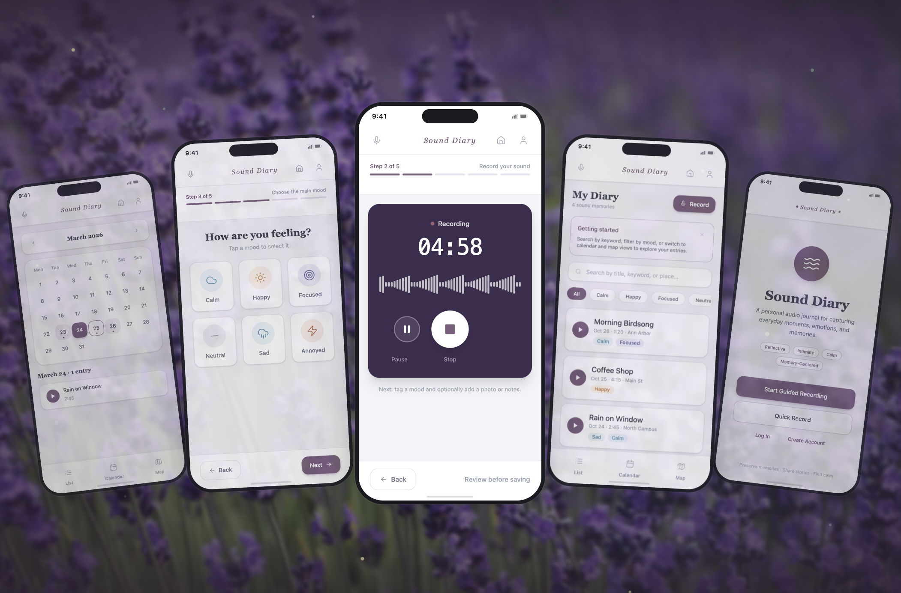
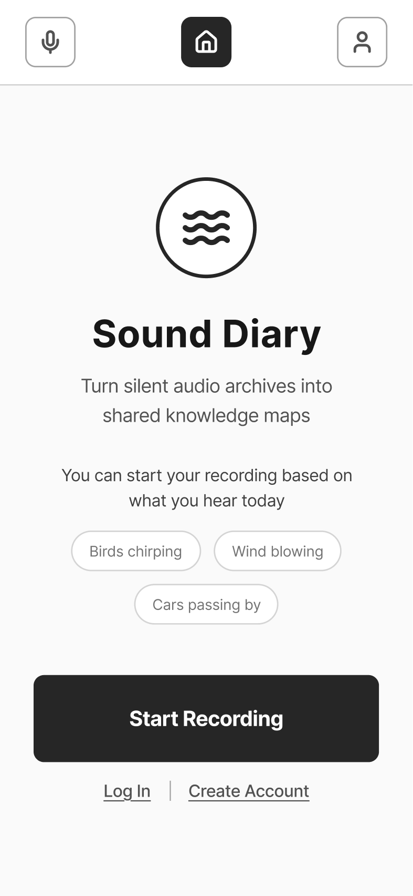
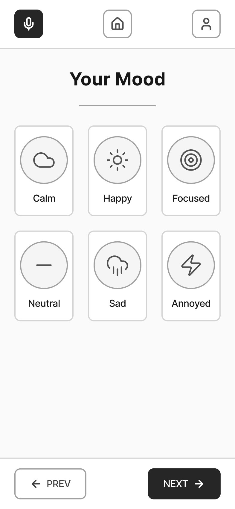
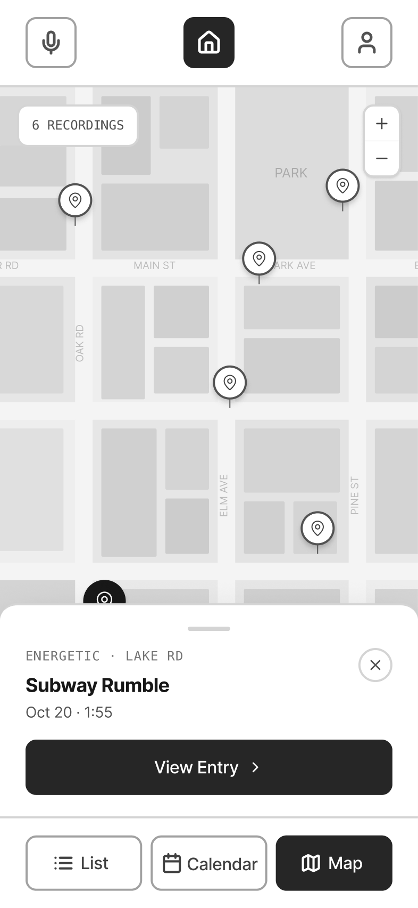
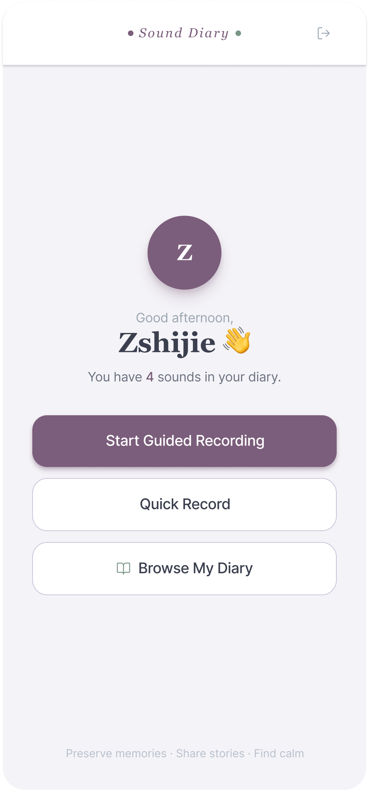
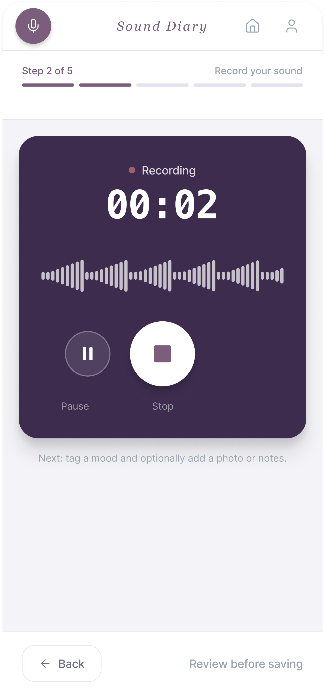
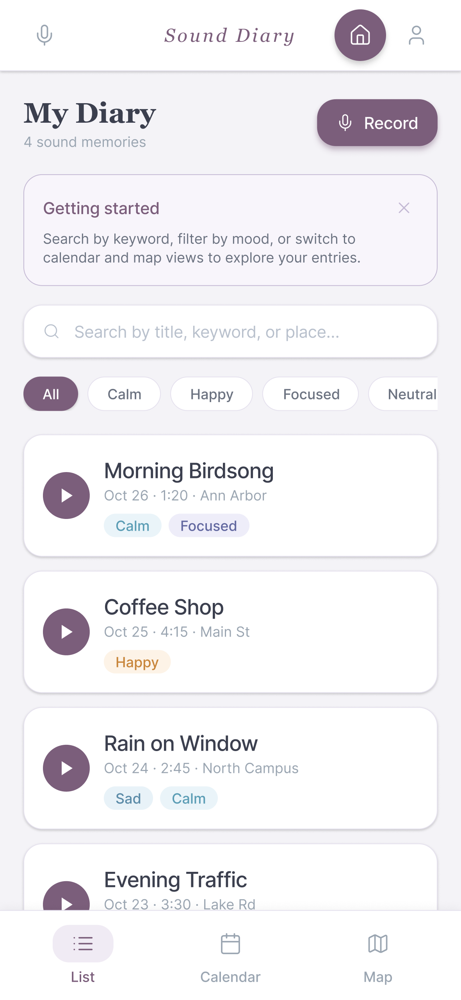
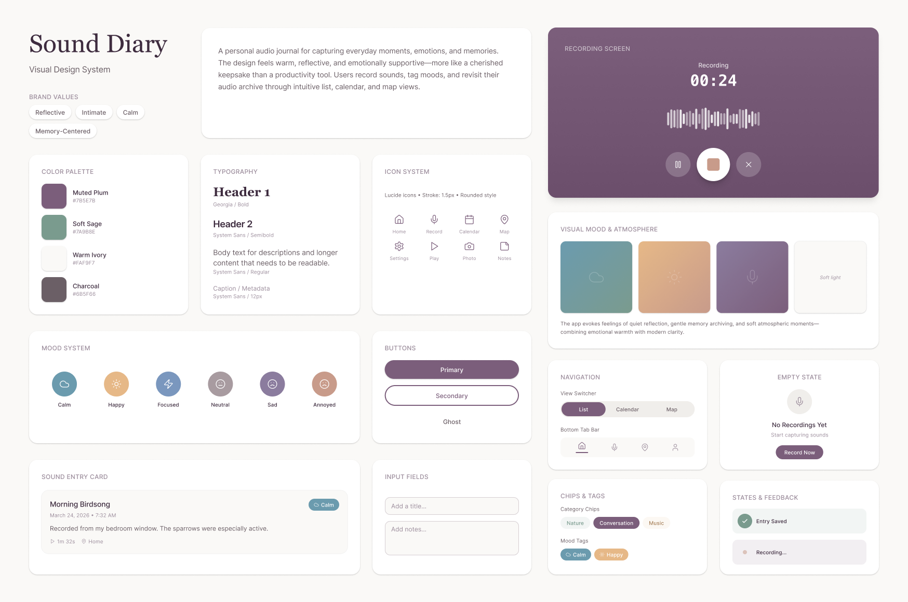

Sound Diary
我们每天都在录音——会议、语音备忘、家人的声音。但录完之后呢？大部分录音变成了再也不会被打开的"沉默档案"。这个项目想解决的问题是：怎样让被遗忘的声音重新变得值得回听？
Sound Diary 是一款个人声音日记 app。用户可以录制日常声音、标记情绪和场景、通过日历和地图回溯自己的听觉记忆——让录音不只是存储，而是一种可以翻阅的生活记录。

被遗忘的录音
在数字时代，录音的门槛已经消失了——但回听的门槛依然很高。我们录下会议讨论、家人的故事、突然冒出的想法，然后它们就变成了手机里一堆按时间排列的音频文件，再也没人打开。
问题不在于存储，而在于音频是一种线性的、无法快速浏览的媒介。你没办法像翻相册一样翻录音。现有的工具（语音备忘录、Otter.ai、Loom）要么只负责录制，要么把音频转成文字——但文字会丢失语气、停顿、笑声这些让声音有价值的东西。
用户访谈与发现
我访谈了两组用户：一组把录音用于工作（会议记录、课堂录音），一组用于生活（家人的声音、旅行中的环境音）。一个关键发现是：功能性录音需要效率和可搜索性，情感性录音需要"温度"和上下文——这两种需求在现有工具中完全没有被区分对待。
三个反复出现的主题：大部分录音从未被回听过、用户最想找到的是录音里的"高光时刻"而非全部内容、以及现有工具完全没有社交层——录音是一个人的事，没有人可以和你一起标注、评论或分享片段。
从录制到回忆的五步引导
Sound Diary 的核心交互是一个五步引导式录制流程。不是打开麦克风就录——而是在录制的同时帮用户建立上下文：你在听什么？你的心情如何？要不要加一张照片？要不要写几句话？录完之后，这段声音就不只是一个 .m4a 文件，而是一个有情绪、有场景、有记忆的日记条目。
Prototype






设计语言
Sound Diary 的视觉系统围绕"温暖的私人物件"这个概念构建——不是生产力工具的冷峻感，而是像一本旧日记本的亲切感。色彩上用 Muted Plum 做主色调、Soft Sage 做辅助色，Warm Ivory 做背景，Charcoal 做文字。字体选择了 Georgia（标题）和系统无衬线（正文），前者带有书卷气，后者保证可读性。

反思
这个项目让我对"声音作为设计材料"有了更深的理解。在 Interval 里，声音是用来叙事的；在 Sound Diary 里，声音是用来记忆的。两个项目的共同点是：声音本身不够，你需要给它加上上下文——情绪、地点、视觉线索——它才能从一段被遗忘的音频变成一个值得回味的体验。
这个洞察直接影响了我对交互设计的理解：好的交互不是让用户"做更多事"，而是在用户已经在做的事情上，帮他们建立更丰富的连接。
我做了什么
这是 SI 582 Interaction Design 课程的个人项目。从问题定义、用户访谈、竞品分析、人物画像、场景设计、用户流程、低保真线框到设计系统——全部独立完成。